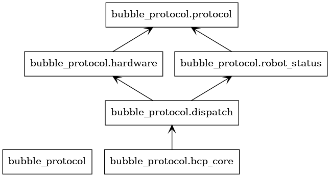

bubble_protocol package
This module maintains the functions related to robot communication, and the sub-module relationship is shown in the figure below:
bubble_protocol.protocol module
This module defines the basic data structure of the communication protocol. The communication protocol documentation see Birdiebot Communication protocol .
- class bubble_protocol.protocol.BCP_FRAME
Bases:
objectBCP FRAME. More infomation, see Birdiebot Communication protocol
- info: list
The data of frame.
- sumcheck: int
Sum check of data frame.
- addcheck: int
Additional of data frame.
- setData(self, data: bytes)
Add data to info list, and calculate check value at the same time.
- getData(self)
Gets all values of the current data.
- combineCheck(self)
Set the final check values of the data frame.
>>> from bubble_protocol.protocol import BCP_FRAME >>> current_packet = BCP_FRAME() >>> current_packet.setData(55) >>> current_packet.combineCheck() >>> current_packet.getData() bytearray(b'777') >>> [i for i in current_packet.getData()] [55, 55, 55]
- combineCheck() None
Set the final check values of the data frame.
- getData() bytearray
Gets all values of the current data.
- bytearray
all values of the current data.
- setData(data: bytes) None
Add data to info list, and calculate check value at the same time.
- data: bytes
The data to be added.
- class bubble_protocol.protocol.BCP_TX_FRAME
Bases:
BCP_FRAMEBCP transfer frame. if the data frame only needs to be received by local MCU, you can use
BCP_TX_FRAME.bubble_protocol.protocol.BCP_FRAME().- INFO = None
- d_addr = None
bubble_protocol.dispatch module
Robot communication dispatch layer, this module is the bridge between DDS and serial port hardware. Through the module, a BCP frame can be initialized to receive the data transmitted by DDS and send the data to MCU. At the same time, the data received by the onboard computer will also be transmitted to the DDS through this module to be received by other subscribers.
- class bubble_protocol.dispatch.RobotAPI(name='standard')
Bases:
NodeGenerate a new BCP core.
- robot_status: RobotStatus
The robot current status.
- robot_serial: Serial
Onboard serial port object.
>>> from bubble_protocol.dispatch import RobotAPI >>> core = RobotAPI()
- api_init() None
General information API of robot definition.
- barrel_callback(msg: Shooter) None
Shooter function, send enable shooter infomation to MCU.
- msg: Shooter
A mode message is received
- ex_chassis_callback(msg: Chassis) None
Chassis function, send chassis infomation to MCU.
- msg: Chassis
A chassis message is received
- ex_odom_callback(msg: PoseWithCovariance)
Odoo function, send chassis infomation to MCU.
- msg: PoseWithCovariance
A chassis message is received
- gimbal_callback(msg: Gimbal) None
gimbal function, send gimbal infomation to MCU.
- msg: Gimbal
A mode message is received
- heartbeat()
heartbeat function, send heartbeat frames periodically.
- init_robot(name)
Expanded api definition, API required by the special robot is initialized.
- name: str
robot name, name option reference The Chinese-English comparison table .
- mode_ctrl_callback(msg: Int8) None
mode control function, send mode infomation to MCU.
- msg: Int8
A mode message is received
bubble_protocol.hardware module
Robot communication dispatch layer, The module sets the serial port rules, and analyzes the communication data between the onboard computer and MCU.
- class bubble_protocol.hardware.RobotSerial(name, *, port='/dev/ttyUSB0', baudrate=921600, timeout_T=0)
Bases:
Serial- init_device(port: str, baudrate: int, timeout_T: int) None
UART device initialization parameters setting
- port: str
Com port path
- baudrate: int
Serial port baudrate
- timeout_T: int
Timeout
- init_protocol(name: str) None
Initialize protocol frame param used robot name.
- name: str
robot name
- onboard_data_analysis(current_packet: BCP_FRAME) None
- current_packet: BCP_FRAME
Update robot status by successfully parsed BCP frame.
- process()
Thread handing functions. The buffer data is periodically taken out by timer for updating robot status or sending to MCU.
- reset_rx_buffer() None
Reset receive buffer
- rx_function() None
The data in the buffer is parsed periodically, the function will put BCP freme to
current_packetif data is parsed successfully.
- send(data: bytearray) None
Write string to UART.
- data: bytearray
The data stream to be send
- send_data(name: str, info: list)
Convert data that needs to be send to MCU into BCP frame datas.
- name: str
robot name.
- info: list
A list of data to send.
- setFrameData(frame: BCP_TX_FRAME, info: list, data: OrderedDict)
bubble_protocol.robot_status module
Robot communication status layer, and this module may be refactored in the future. This module will publish the robot status data sent by MCU to onboard to DDS for other subscriber to receice.
- class bubble_protocol.robot_status.RobotStatus(status: dict, node: Node)
Bases:
objectSend robot status information.
- node: Node
Node of maintain robot status information.
- status: STATUS
Robot current status data.
- non_realtime_status() None
The function defines data publish rules of robot’s non-realtime status. It will executed perodically by timer. The period is usually 1 second.
- status_init() None
The function defines publishes required for the robot status.
bubble_protocol.bcp_core module
- bubble_protocol.bcp_core.main(args=None)
BCP core entrance.